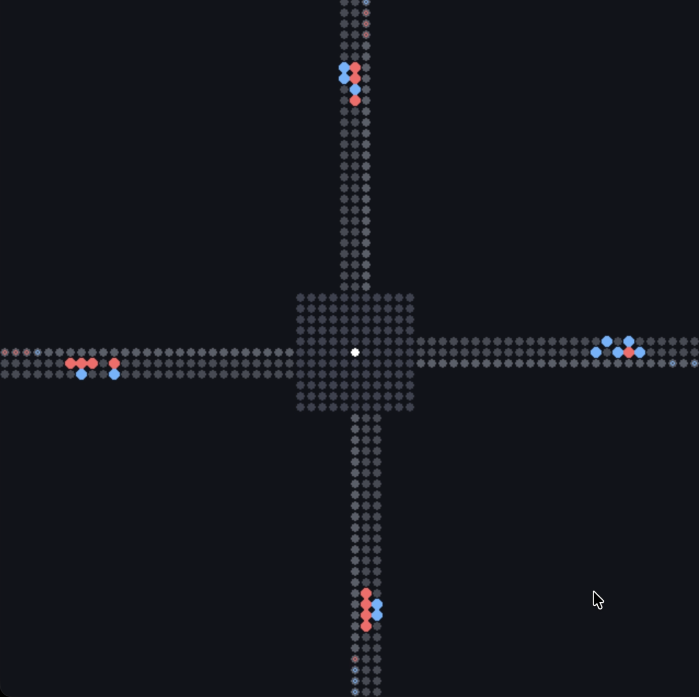
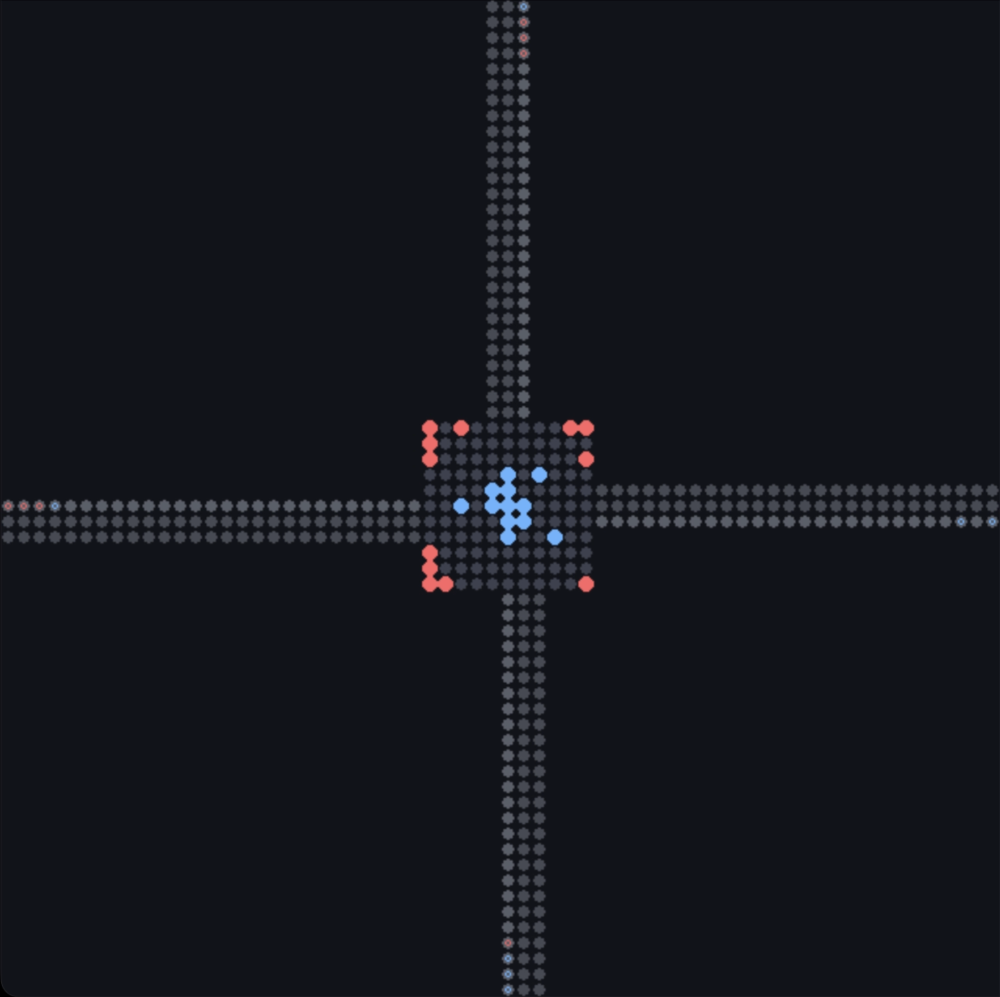
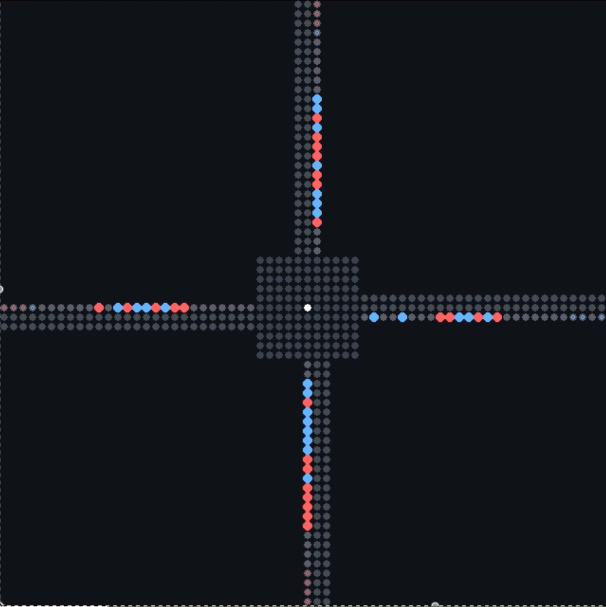

Urban transportation systems face a fundamental efficiency paradox: individually optimal routing decisions can create system-wide congestion that increases travel time for all participants. Autonomous vehicles (AVs) offer a transformative opportunity—coordination algorithms could dynamically adapt vehicle behavior to traffic conditions, forming "virtual roundabouts" during congestion and allowing direct routing when roads are clear.
We propose Guided Local Coordination (GLC), a decentralized framework combining global shortest-path guidance with priority-based local conflict resolution. GLC precomputes optimal distance labels for the entire network, then uses priority inheritance and backtracking to resolve real-time collisions without replanning. GLC scales to city-scale networks with 4K nodes and 10K agents. As a key qualitative result, GLC produces emergent circulation patterns: left-turn traffic spontaneously forms roundabout-like flows during high density while straight-through traffic proceeds unimpeded—adaptive coordination arising purely from local rules without explicit programming.



Illustrative snapshots of emergent circulation in the four-way intersection under PIBT-style conflict resolution. Red agents are left-turn vehicles. Rather than executing direct left turns that repeatedly cross opposing flows, left-turn agents implicitly "merge" into a one-way ring inside the intersection and exit when aligned with their desired outbound lane, resembling a roundabout.
Table 1 — Four-way 2-in-1-out intersection. Total delay, 24 agents, 30% left / 35% straight / 35% right (mean over 3 seeds).
| Method | Seed 85 | Seed 196 | Seed 410 | Mean | Overhead |
|---|---|---|---|---|---|
| IDEAL | 1,428 | 1,428 | 1,412 | 1,423 | — |
| SP | 1,897 | 1,891 | 1,867 | 1,885 | +32% |
| Circular | 1,713 | 1,712 | 1,746 | 1,724 | +21% |
| PIBT | 1,458 | 1,464 | 1,450 | 1,457 | +2% |
| G-PIBT | 1,477 | 1,476 | 1,468 | 1,474 | +4% |
| GLC | 1,466 | 1,484 | 1,476 | 1,475 | +4% |
Table 2 — 3×3 small road network. Total delay vs number of agents (seed=42).
| Agents | IDEAL | SP | PIBT | G-PIBT | GLC |
|---|---|---|---|---|---|
| 8 | 248 | 257 (+3%) | 248 (+0%) | 248 (+0%) | 248 (+0%) |
| 16 | 511 | 530 (+4%) | 514 (+1%) | 515 (+1%) | 514 (+0%) |
| 24 | 795 | 825 (+4%) | 798 (+0%) | 802 (+1%) | 800 (+1%) |
| 32 | 1,055 | 1,096 (+4%) | 1,061 (+1%) | 1,072 (+2%) | 1,063 (+1%) |
| 40 | 1,297 | 1,352 (+4%) | 1,309 (+1%) | 1,328 (+2%) | 1,311 (+1%) |
| 60 | 1,977 | 2,080 (+5%) | 2,019 (+2%) | 2,042 (+3%) | 2,111 (+7%) |
Table 3 — City-scale Manhattan. Total delay and runtime on the Manhattan road network.
Runtimes vary by machine. Delay overhead percentages are machine-independent.
100 agents (IDEAL, SP, TAP, PIBT, G-PIBT, GLC)
| Method | Total Delay | Overhead | Runtime (s) |
|---|---|---|---|
| IDEAL | 2,457 | — | 0.02 |
| SP | 2,607 | +6.1% | 0.26 |
| TAP | 2,698 | +9.8% | 6.51 |
| PIBT | 2,522 | +2.6% | 0.76 |
| G-PIBT | 2,633 | +7.2% | 49.82 |
| GLC | 2,600 | +5.8% | 0.69 |
1,000 agents (IDEAL, SP, PIBT, GLC)
| Method | Total Delay | Overhead | Runtime (s) |
|---|---|---|---|
| IDEAL | 23,850 | — | 0.19 |
| SP | 33,250 | +39.4% | 4.55 |
| PIBT | 30,573 | +28.2% | 11.42 |
| GLC | 32,062 | +34.4% | 11.08 |
10,000 agents (IDEAL, SP, PIBT, GLC)
| Method | Total Delay | Overhead | Runtime (s) |
|---|---|---|---|
| IDEAL | 243,125 | — | 2.12 |
| SP | 2,203,068 | +806.1% | 618.78 |
| PIBT | 1,075,988 | +342.6% | 741.36 |
| GLC | 1,017,513 | +318.5% | 630.91 |
ACM format
BibTeX